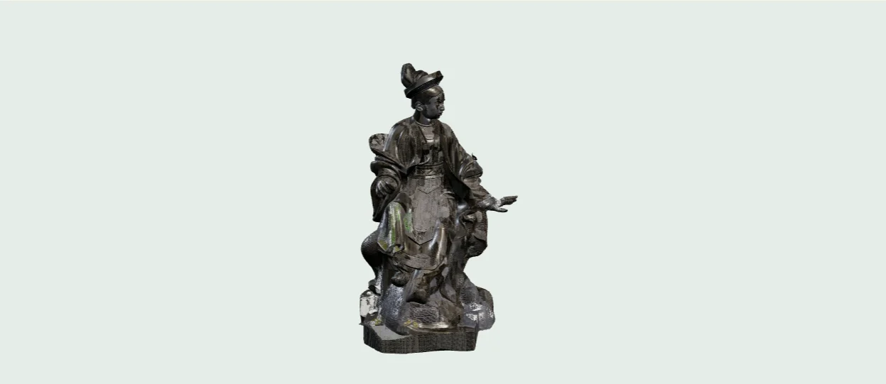

Media
Những góc nhìn văn chương
 Video đang được cập nhật
Video đang được cập nhậtKhám phá toàn cảnh Bảo tàng Văn học Việt Nam
Nơi lưu giữ những dấu ấn đặc sắc của nền văn học dân tộc, Bảo tàng Văn học Việt Nam đưa du khách bước vào hành trình khám phá văn chương qua từng thời kỳ. Từ những hiện vật, tư liệu quý giá đến không gian trưng bày sinh động, mỗi góc bảo tàng đều kể một câu chuyện về các tác giả, tác phẩm và di sản văn học Việt Nam

Kéo để xoay · Cuộn để phóng to